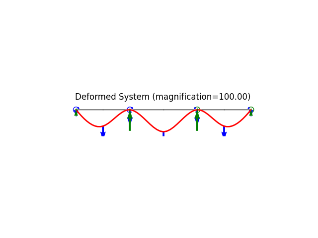
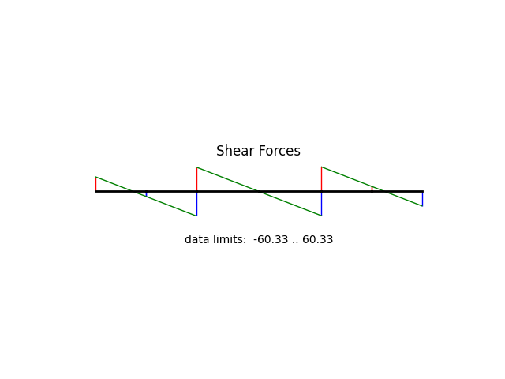
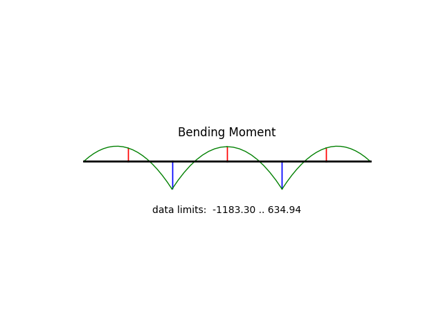

Note
Go to the end to download the full example code
Three-span continuous beam under uniform load.
The system is statically indeterminate but simple enough to validate deformation, reactions and internal forces.
Author: Peter Mackenzie-Helnwein
from femedu.examples.Example import *
from femedu.domain.System import *
from femedu.domain.Node import *
from femedu.elements.linear import Beam2D
from femedu.materials.ElasticSection import *
class ExampleBeam02(Example):
def problem(self):
# initialize a system model
SpanLengths = [ 8.0 * 12, 10.0 * 12, 8.0 * 12 ]
Nelems = 2 # number of elements
params = {'E': 29000., 'A': 5, 'I':50}
# define load
w = -1.00
model = System()
# meshing parameters
Xnode = 0.0
Ynode = 0.0
Offset = 0.0
# create left node
nd0 = Node(Xnode, Ynode)
nd0.fixDOF('ux', 'uy') # pin support left end
model += nd0
# initialization for node and element creation
ndi = nd0
for SpanLength in SpanLengths:
Le = SpanLength / Nelems
for e in range(Nelems):
# create next node
Xnode += Le
ndj = Node(Xnode, Ynode)
model += ndj
# create elements
elem = Beam2D(ndi, ndj, ElasticSection(params))
model += elem
# load the element with a uniform load
elem.setDistLoad(w)
# shift one node to the right
ndi = ndj
# define support(s)
ndj.fixDOF('uy') # roller support right end
# move on to the next span
Offset = Xnode
# done building the model
# analyze the model
model.solve()
# write out report
model.report()
# create plots
model.plot(factor=100., filename="beam02_deformed.png", show_bc=1, show_reactions=1)
model.beamValuePlot('V', filename="beam02_shear.png")
model.beamValuePlot('M', filename="beam02_moment.png")
Run the example by creating an instance of the problem and executing it by calling Example.run()
if __name__ == "__main__":
ex = ExampleBeam02()
ex.run()
- 
- 
- 
System Analysis Report
=======================
Nodes:
---------------------
Node_17:
x: [0. 0.]
fix: ['ux', 'uy']
u: [ 0. -0.0123663]
Node_18:
x: [48. 0.]
u: [-0.292646 0.00326429]
Node_19:
x: [96. 0.]
fix: ['uy']
u: [ 0. -0.00069085]
Node_20:
x: [156. 0.]
u: [-3.93139430e-01 -4.24063967e-19]
Node_21:
x: [216. 0.]
fix: ['uy']
u: [0. 0.00069085]
Node_22:
x: [264. 0.]
u: [-0.292646 -0.00326429]
Node_23:
x: [312. 0.]
fix: ['uy']
u: [0. 0.0123663]
Elements:
---------------------
Beam2D: Node_17 to Node_18:
material ElasticSection properties: {'E': 29000.0, 'A': 5, 'I': 50, 'nu': 0.0, 'fy': 1e+30} strain:{'axial': 0.0, 'flexure': 0.0} stress:{'axial': 0.0, 'flexure': 0.0}
nodal forces: Vi:11.673913043478258 Mi:-191.99999999999994 Vj:-11.673913043478258 Mj:752.3478260869563
Beam2D: Node_18 to Node_19:
material ElasticSection properties: {'E': 29000.0, 'A': 5, 'I': 50, 'nu': 0.0, 'fy': 1e+30} strain:{'axial': 0.0, 'flexure': 0.0} stress:{'axial': 0.0, 'flexure': 0.0}
nodal forces: Vi:-36.32608695652172 Mi:-752.347826086956 Vj:36.32608695652172 Mj:-991.3043478260865
Beam2D: Node_19 to Node_20:
material ElasticSection properties: {'E': 29000.0, 'A': 5, 'I': 50, 'nu': 0.0, 'fy': 1e+30} strain:{'axial': 0.0, 'flexure': 0.0} stress:{'axial': 0.0, 'flexure': 0.0}
nodal forces: Vi:29.999999999999993 Mi:883.3043478260867 Vj:-29.999999999999993 Mj:916.6956521739128
Beam2D: Node_20 to Node_21:
material ElasticSection properties: {'E': 29000.0, 'A': 5, 'I': 50, 'nu': 0.0, 'fy': 1e+30} strain:{'axial': 0.0, 'flexure': 0.0} stress:{'axial': 0.0, 'flexure': 0.0}
nodal forces: Vi:-29.99999999999999 Mi:-916.6956521739127 Vj:29.99999999999999 Mj:-883.3043478260865
Beam2D: Node_21 to Node_22:
material ElasticSection properties: {'E': 29000.0, 'A': 5, 'I': 50, 'nu': 0.0, 'fy': 1e+30} strain:{'axial': 0.0, 'flexure': 0.0} stress:{'axial': 0.0, 'flexure': 0.0}
nodal forces: Vi:36.32608695652173 Mi:991.3043478260865 Vj:-36.32608695652173 Mj:752.347826086956
Beam2D: Node_22 to Node_23:
material ElasticSection properties: {'E': 29000.0, 'A': 5, 'I': 50, 'nu': 0.0, 'fy': 1e+30} strain:{'axial': 0.0, 'flexure': 0.0} stress:{'axial': 0.0, 'flexure': 0.0}
nodal forces: Vi:-11.673913043478258 Mi:-752.347826086956 Vj:11.673913043478258 Mj:192.0
Total running time of the script: (0 minutes 0.594 seconds)